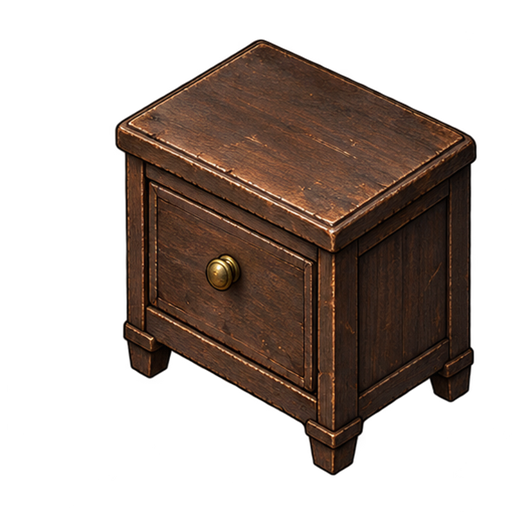
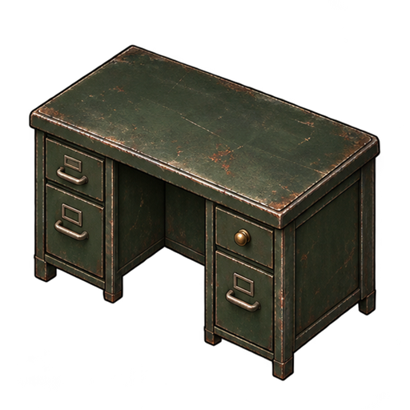
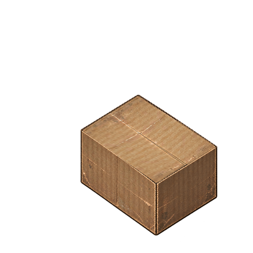
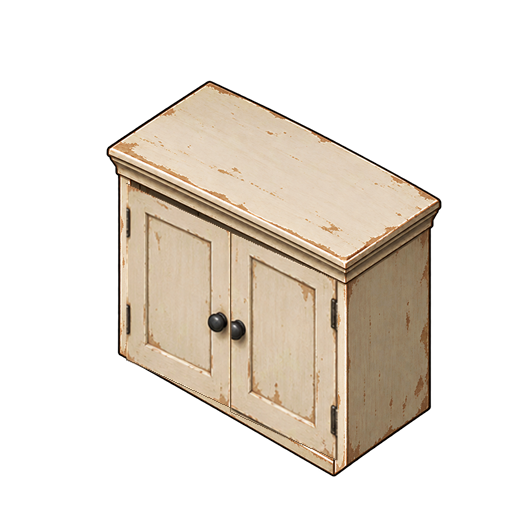

旧木床头柜

显示画布 232 × 232 · 4 帧 / 8 FPS
点击逐个播放。各组固定 512×512 透明帧，统一缩放并按固定柜体参照对齐。

显示画布 232 × 232 · 4 帧 / 8 FPS

显示画布 340 × 340 · 4 帧 / 8 FPS

显示画布 268 × 268 · 4 帧 / 8 FPS

显示画布 300 × 300 · 4 帧 / 8 FPS